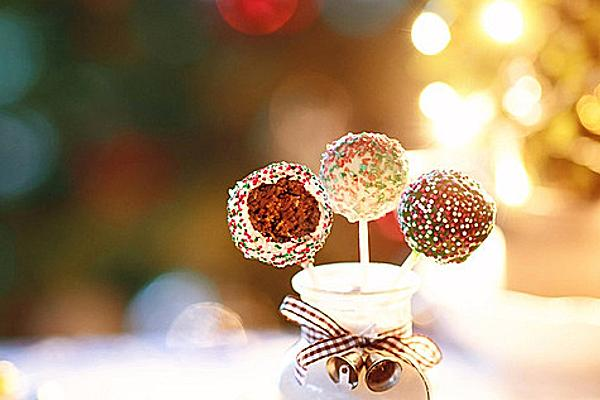

Cakepops

Fun and Festive Treat for the Holidays!
Ingredients
- 1 box red velvet cake mix (or any desired flavor but red velvet looks festive)
- 1 cup water
- 1/2 cup vegetable oil
- 3 eggs
- 1 cup frosting
- 12 ounces candy melts
- lollipop sticks (optional but fun)
- sprinkles or other desired decorative toppings
Steps
- Preheat the oven to 350F. Butter a 13x9 in cake pan.
- In a large bowl, whisk together cake mix, water, oil, and eggs until combined. Pour into pan.
- Bake according to package directions. Cool completely.
- Line a small baking sheet or plate with wax or parchment paper.
- Crumble cooled cake into a large bowl and add frosting. Stir with wooden spoon until texture resembles wet sand.
- Scoop 1 tablespoon of cake mixture and roll into balls.
- Place on lined plate and refrigerate for at least 4 hours, or freeze for 30 mins.
- Melt candy according to package instructions and place in a 2 cup measuring cup or tall drinking glass.
- Pull out a few cake balls at a time to work on while the rest stay in the fridge. (keeping them cold helps the coating to set quickly.
- Dip the tip of a lollipop stick in the melted chocolate and insert about halfway into a cake ball
- Dip cake ball into the chocolate, making sure to coat entirely. Remove and let excess chocolate drip off.
- Decorate with sprinkles or toppings (optional) and place upright in a styrofoam block or cardboard box. Let stand until coating is set.
*Cakepops can last in the fridge up to 1 week!